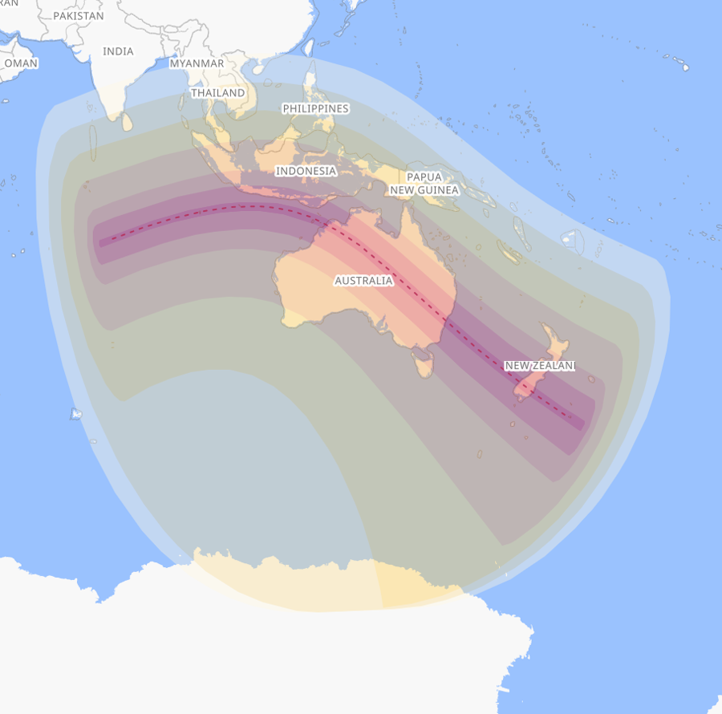
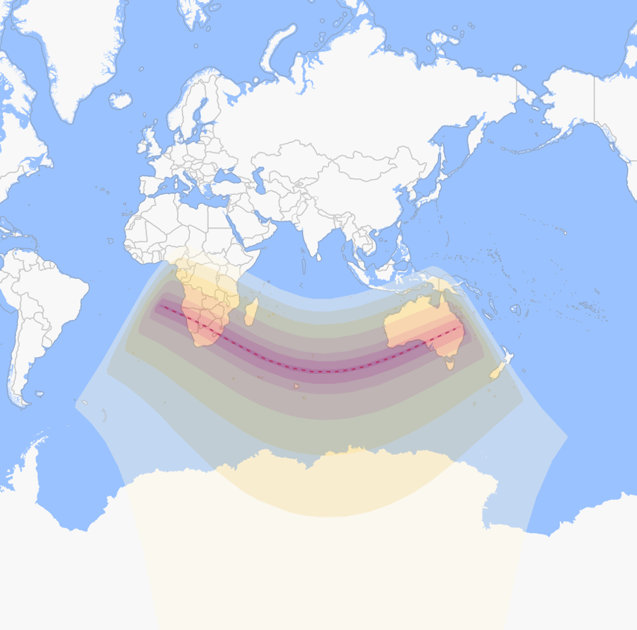
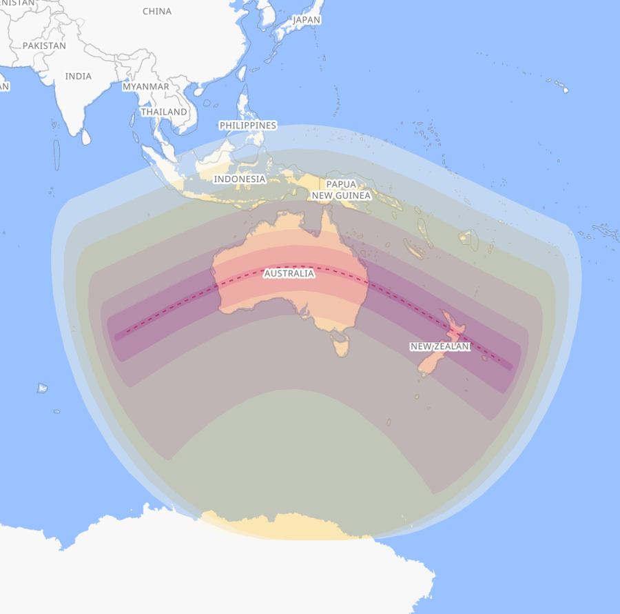
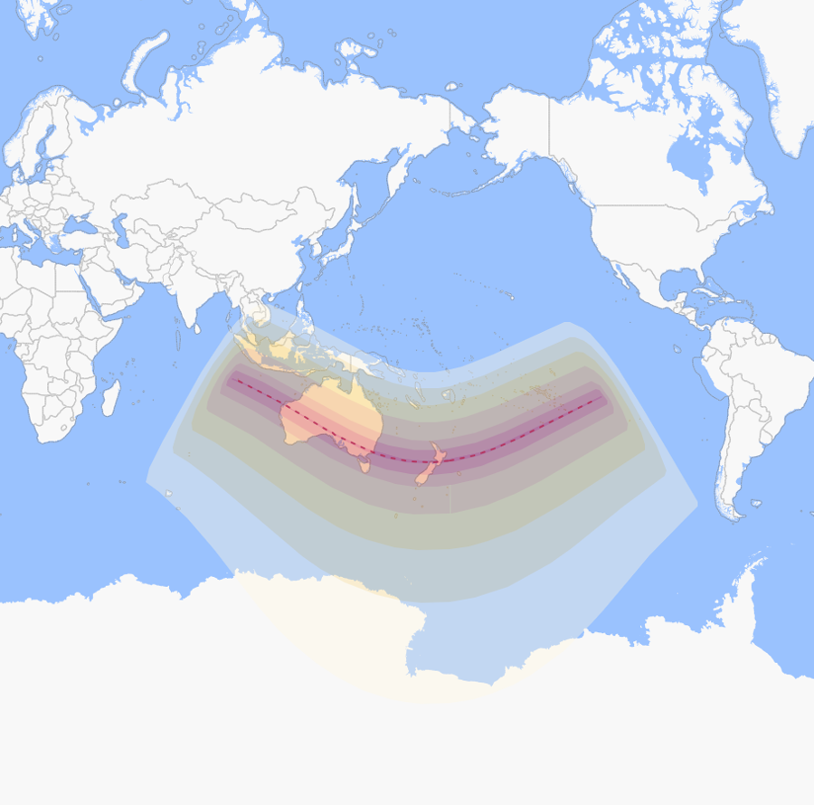

Change it · Luke's Relevance
The clocks
Two clocks are running. One is political and you can argue with it: parliaments, terms, a Games in 2032. The other is the sun going out over this country four times before 2039, and you cannot argue with that at all.
The political clock
Until the Brisbane opening ceremony
23 July 2032
The Brisbane 2032 Olympic Games run 23 July to 8 August 2032, with the Paralympic Games after them. A federal parliament runs at most three years, so at least two federal elections sit inside this window, and every state and territory goes to the polls as well. Live countdowns to each of those elections are on the P4A state and territory portal, and the regional cycles across the Pacific are on the Oceania pulse board.
What that clock is for is set out in the cyber republic room: a purple party winning seats, a simulator, a referendum carried outright, and Oceania able to join what comes out of it.
Every vote between here and then
Seats are won at elections, so these are the chances there are. Every state and territory goes to the polls at least once before the Games, and most of them twice.
Loading the dates from the P4A board.
Dates come straight from the P4A state and territory portal, read live, so a correction there shows up here.
The neighbours
A federated cyber republic means the countries next door, so their cycles matter as much as ours. Oceania votes on its own timetable, and in several places that timetable is genuinely uncertain.
Loading the cycles from the P4A Oceania board.
From the Oceania pulse board, read live, including its rule about which cycles are firm enough to count down.
The bigger clock
Between 2023 and 2038, Australia gets five total solar eclipses: five days when the moon covers the sun completely and the middle of the day goes dark. Over those same years North America gets one, South America none, Europe two, Africa three and Asia two. No other continent comes close.
One has already happened, at Exmouth in April 2023. Four are still coming, and one of them goes straight over Brisbane, five years after the Games.
22 July 2028
Until it goes dark
22 July 2028
Up to 5 minutes 10 seconds of full darkness. It comes ashore in the Kimberley near Wyndham and Kununurra, across the Northern Territory by Tennant Creek, through south-west Queensland at Birdsville, then Bourke and Dubbo, straight over the middle of Sydney, and out to Queenstown and Dunedin in New Zealand.
The sun starts going out over Western Australia at 9.07am, and it is fully dark on the coast there by 10.47am. It stays dark somewhere in the country until 2.03pm eastern time, and the last of it is off the map by 3.49pm. Sydney gets a bit under four minutes of it, early afternoon. The last time Sydney went dark like that was 171 years ago. For the times at your own address, open the interactive map.

25 November 2030
Until it goes dark
25 November 2030
Up to 3 minutes 44 seconds of full darkness, in a strip about 135 kilometres wide in South Australia, narrowing to about 120 by the time it reaches south-east Queensland. It crosses the coast near Streaky Bay, passes north of Adelaide, runs through the far north-west of New South Wales, and runs out at sunset about 150 kilometres north of Toowoomba, taking in Cunnamulla, Bollon, Surat and Miles on the way.
Adelaide misses out on this one. The strip passes to its north, so the city only gets a partial: the sun dims but never goes out. That is a completely different thing to see. Check your own town on the interactive map.

13 July 2037
Until it goes dark
13 July 2037
Up to 3 minutes 58 seconds of full darkness. It comes ashore near Geraldton, crosses the southern Northern Territory past Yulara, then Queensland through Bedourie, Charleville, Roma and Toowoomba, straight over Brisbane and the Gold Coast, out through Byron Bay, then Lord Howe Island and the North Island of New Zealand.
Surat and Miles are in the strip for this one and the 2030 one. Two of them, seven years apart, over the same paddocks. The interactive map zooms to street level.

26 December 2038
Until it goes dark
26 December 2038
Up to 2 minutes 18 seconds of full darkness, the shortest of the four and the last of the five. It starts out in the Indian Ocean, comes ashore in Western Australia, crosses South Australia, and runs out along the Victoria and New South Wales border. The deepest part of it happens over open water, south-west of New Zealand.

Where these come from
Eclipse dates, times and paths are from the Astronomical Association of Queensland, cross-checked against NASA eclipse data. The path maps and local times are from timeanddate.com, which will also give you circumstances for your own address. The clocks above count to the deepest moment of each eclipse, converted to wherever you happen to be reading this. Games dates are the announced Brisbane 2032 schedule.
A countdown is only as good as the date it points at. Four of these five are locked in by the orbits of the moon and the earth and will not move. The other one is set by an organising committee.